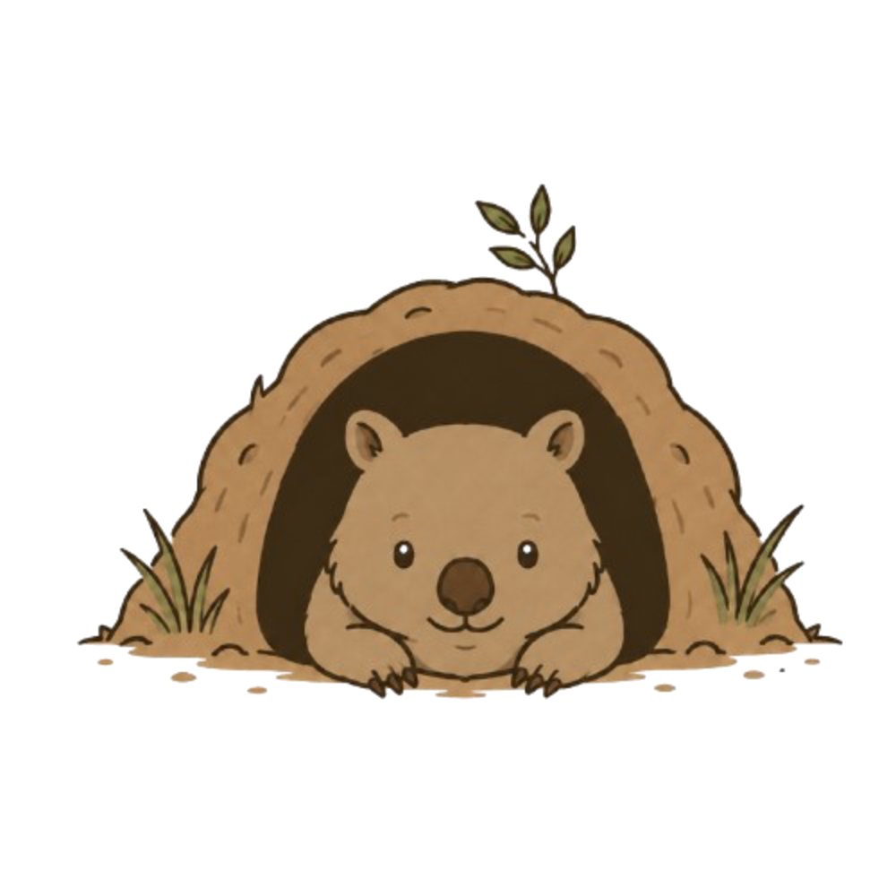

Thanks for joining the Writer's Ground waitlist. You'll be among the first to know when the full platform launches and when beta testing spots open up.
In the meantime, the opportunity database is live and free to use — go explore.